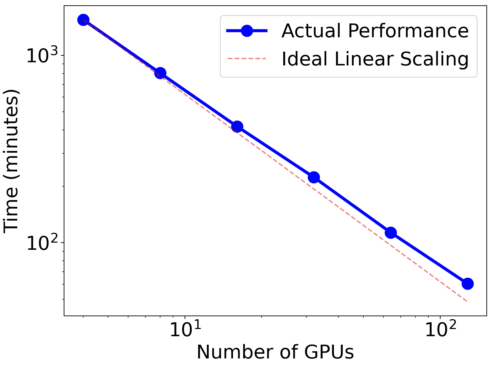
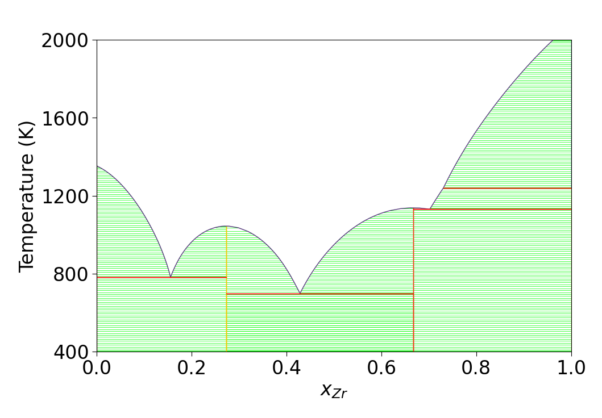

Agentic workflow layer
A supervised AI controller will help choose scientific next steps and manage HPC execution decisions such as task batching, retries, queue monitoring, CPU/GPU allocation, and provenance tracking.
News and activities
Recent research directions, meetings, publications, software releases, datasets, and project news from the MLAMD Center.
News and activities
A supervised AI controller will help choose scientific next steps and manage HPC execution decisions such as task batching, retries, queue monitoring, CPU/GPU allocation, and provenance tracking.
Thrust 2 released exa-PD as open-source software and published the accompanying software paper in Computer Physics Communications. The release establishes a citable workflow for massively parallel phase-diagram construction and synthesis-pathway studies.
Read the paperThrust 1 reached a milestone version of the MLIP-accelerated genetic algorithm workflow. Although this module has not yet been publicly released, it is performing well and has already predicted a new ternary compound that was successfully synthesized.
The current Thrust 1 effort extends the workflow from demonstrated ternary searches to multicomponent motif libraries, MLIP relaxation, DFT validation, and disorder-aware search.
The project reached the APS Global Physics Summit program, extending visibility for MLAMD progress across the condensed-matter and materials-physics community. Session listing
Thrust 1 advanced the next exa-AMD module toward MLIP-assisted relaxation, adaptive search, and higher-order composition-space exploration.
Thrust 2 has a working Module I story for massively parallel MD-based free-energy calculations, phase-diagram construction, and CALPHAD-compatible thermodynamic output.
The project released exa-AMD as open-source software and published the JOSS software paper, establishing a citable workflow foundation for community use.
The center shared progress through the 2025 EFRC-Hub-CMS-CCS PI Meeting, connecting exa-AMD and exa-PD developments with the broader BES computational materials science community. Program book
Ames National Laboratory presented CMS Center work on accelerating functional-materials discovery using AI/ML and exascale computing, with poster talks and handouts highlighting Thrusts 1 and 2. Meeting page

